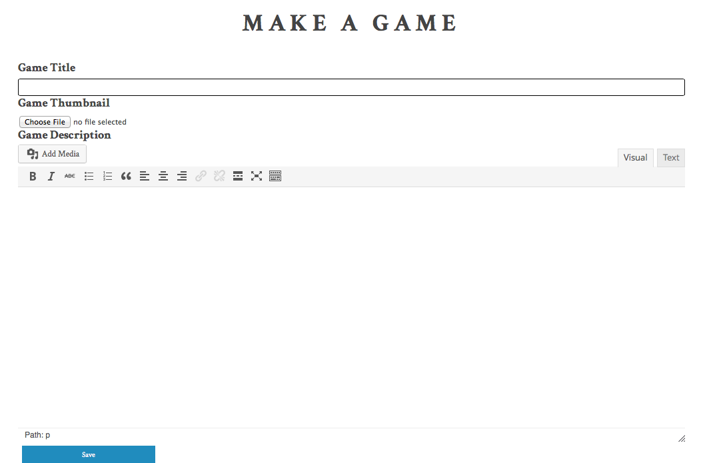
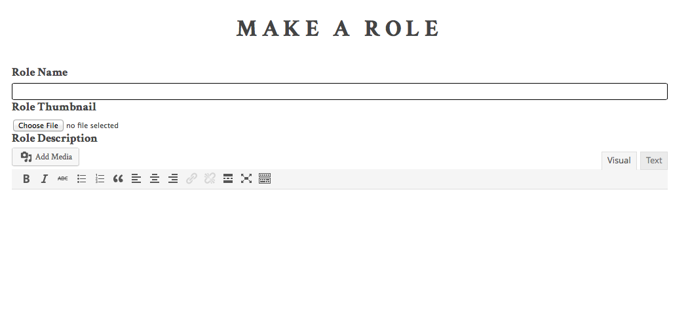
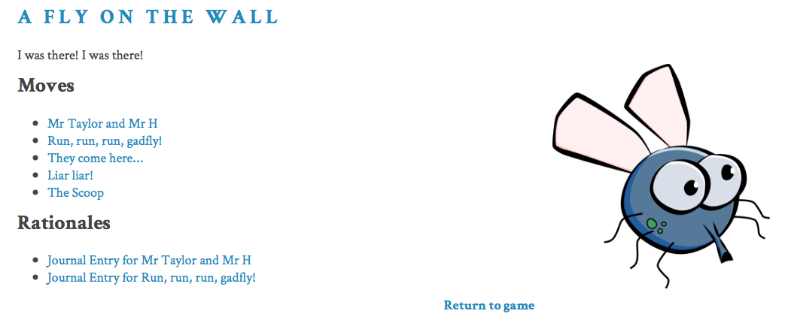
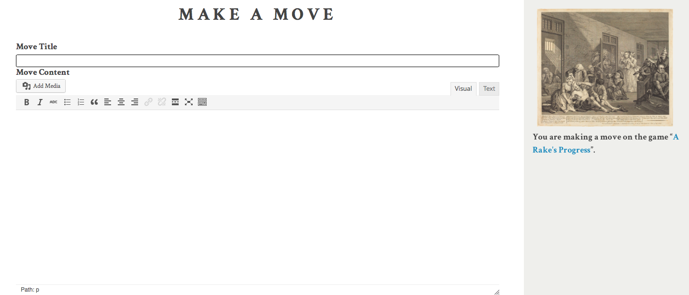
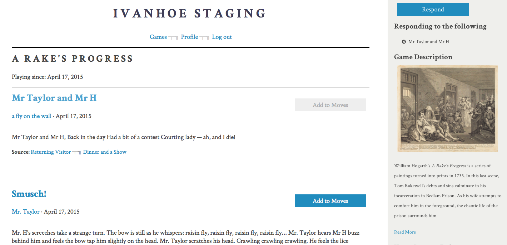
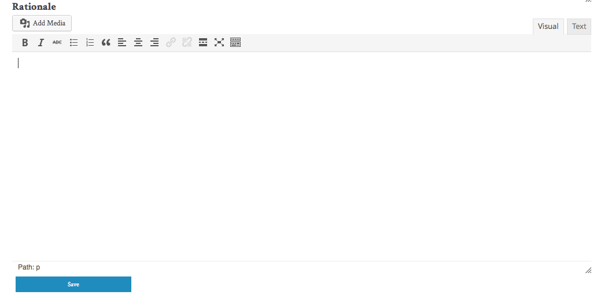
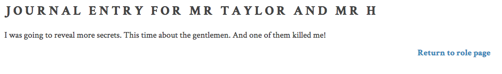
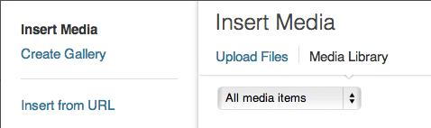

Documentation
Administrative Setup
- Download the zip file, unzip, and put it into the folder wp-content/themes.
- To activate the theme, login to the WP admin panel, go to Appearance, then find the Ivanhoe theme and activate it.
- If successful, you will see three additional custom post types: Moves, Games, and Roles.
- To make a new game, visit your site and click on the "Games" tab in the navigation menu. Then click on the “Make a Game” button.
Note: If you are not logged in, the “Make a Role” and “Make a Move” buttons will not show up. Users who are not logged in can only browse games.
Adding Users
Once administrators have downloaded the theme they can invite users to participate in Ivanhoe one of two ways: adding users manually or allowing anyone to register. If you want control over who can access your learning environment the best option is to manually add users to your Ivanhoe theme. If you wish for users to access your games and create a larger network of users you should make your games available for anyone to register.
Adding Users Manually
- Log into your WordPress Administration Panel (Dashboard)
- Click on the “Users” Tab on the left hand side of the screen
- Click the “Add New” button at the top of the screen.
- Fill in the fields as required.
- Assign a Role: Unlike a typical WordPress, all roles have the same capabilities. Users of all levels may make moves, make roles, and create new games. However, only administrators may add new users. If you want to be the only user who may edit elements of the game, you may wish to make specify this in the Game Description field. See "Game Description Fields" below for more information.
- When all fields are complete click “Add New User.”
NOTE: You must assign users a “username” and “password” and provide the user’s e-mail address. We suggest making the username a variation of the user’s actual name and making the password something easy to remember. For example if the person who you wish to register’s name is John Smith an easy to assign username would be something like “JSmith” and the password could be “1234!@#$” – users have the ability to change both their username and password after accepting their invitation to play.
Allowing Users to Register
- Log into your WordPress Administration Panel (Dashboard)
- Click on “Settings.” This will take you to the “General” settings.
- Under “Membership,” select the box “Anyone can register.”
- Under “New User Default Role,” select “Author,” “Editor,” or “Administrator.”
- Click “Save Changes” at the bottom of the page.
Ivanhoe Notifications
- Log into your WordPress Administration Panel (Dashboard).
- Under “Users,” select “Your Profile.” This will take you to the Profile page.
- Under the last section of that page “Ivanhoe Notifications,” you can choose to receive email notifications when someone makes a move on a game you are playing, and/ or when someone responds to a move you made.
- Click “Update Profile” at the bottom of the page.
When you play Ivanhoe you can start by creating a new game, making a role, or by making a move inside of an existing game. When you are making a connection inside of an already existing game, you are creating a role or making a move, when you are building a new space for pedagogical play you are starting a new game.
Make a Game
What text, music, or artwork will be the focus of your game? What do you want to explore from different perspectives and learn about with others?
Invite others to play with you and help each other see ‘something’ from different perspectives. That ‘something’ can be anything: a document, a composition, a video clip, a piece of art, an everyday object.You can start with just the objective of the game and see where players take it. You can start with a suggested list of roles or have players invent them on their own! Ivanhoe can be customized ad infinitum; there are no set “rules”—so, be sure to take some time to think about how you want to play the game before completing this section.
- You begin by creating a title for your game. It could also be called “untitled”! You can then select an image to be displayed with your game description.
- In game description, you can explain the ‘something’ around which you have built the game. You could also mention the objective of your game. What do you want players to achieve? Do you want to have rules? Is there a way to win? There are many ways you can play Ivanhoe.
- Using the “Add Media” button, you can insert an image, video, or audio file as part of the game description.
- When you are ready, click “Save.”

Make a Role
What character do you want to perform in this game? What do you do as a character? What is the perspective you bring to the game?
Create the character you will be recognized as during the game. Describe the perspective you are playing from. Be as detailed as you want.
- You begin by choosing a game that you would like to play. Once inside the game (make sure you are logged in!), you can read the game description to get an idea of what role you might want to perform. The game you enter may have rules that pertain to the type of role you can create. Click on the “Make a Role” button.
- In Role Name, enter the character that you will play as throughout the game.
- For Role Thumbnail, choose a featured image to be associated with your moves inside of the game, and the image that other players will see during the game.
- In Role Description, create a description for your role that is visible to others. Who is it that you are playing? What characteristics are important for other players to know about you?
- Role Thumbnail – choose a featured image to be associated with your moves inside of the game and the image that other players will see during the game.
- You can revise your Role Name, Role Thumbnail, and Role Description using the Edit Role button.


Make a Move
What do you want to say in this game? What do you want others to learn about the subject/object of the game?
Start performing your role to show your particular perspective as a character in the game. Your action can be in the form of text, sound, images, etc. You can only make or respond to a move after you have created a role. You can then start a new move, or you can “respond to a move” that another player has made.
Make a New Move Outside of an Existing Move
- To make a new move outside of an already existing move click on the “Make a Move” button in the upper right hand corner of your screen.
- Move Title: What do you want your move to convey? Like other titles you can use a combination of words and characters that tell other players in the game what your move is trying to accomplish.
- Move Content: Add media and/or text relevant to your move. This is the information that other players will see so be sure it adequately describes what you are trying to do with this move as well as information needed so that others can play off of it. NOTE: If you are embedding a video into your post you must be in the “text” field not the “visual field.”
- When you are finished with your move click the “submit” button to make your move visible to other players in the game. Be sure to review your response before submitting, as you are unable to edit your move once it is played.

Respond to Existing Move(s)
- To respond to an existing moves click the “Add to Moves” button next to each of the moves you want to respond to.
- You can also deselect any of these moves in the sidebar by clicking on “x” next to the move title.
- When you are finished with your selection, click on the “Respond” button on the sidebar.
- Move Title: What do you want your move to convey? Like other titles you can use a combination of words and characters that tell other players in the game what your move is trying to accomplish.
- Move Content: Add media and/or text relevant to your move. Think about how this move connects to the move that you are responding to. (NOTE: If you are embedding a video into your post you must be in the “text” field not the “visual field”)
- When you are finished with your move click the “submit” button to make your move visible to other players in the game. Be sure to review your response before submitting, as you are unable to edit your move once it is played.

Make a Rationale (Journal Entry)
How does your move fit with your character? If you are responding to another character’s move, how does your move relate to it? How can your move affect other characters and their future moves? What did you learn from the moves of others? Provide justification for your move and how it shapes your character in the game - its thoughts, plans, notes to self, etc. Reflect on the implications of your move for others and the game overall. The journal entries are visible only to you and the administrator.
- On the “Make a Move” page, scroll down to the “Rationale.”
- Create a journal entry in the text box below.
- Using the “Add Media” button, you can insert an image, video, or audio file as part of the journal entry.
- When you are finished, click on the “Save” button.


If you wish to enhance your games, roles, or moves with media (photos, movies, songs) you will need to click on the “Add Media” button. Doing so will bring you to a space where you can upload more files or add files that have already been uploaded. Files that have already been uploaded are under “Media Library.”

Upload a New File
- Click on Upload Files link
- Click on the “Select Files” button to upload a photo/movie from your harddrive or click on “Insert from URL” link on the left to add content already available on the Internet. If selecting a new file, choose the content you wish and then click the “open” button.
- Once file/URL had been selected click “Insert into Page”
Select the file that has already been uploaded and click “Insert into Page”
How to Contribute
Here is a quick guide for contributing developers:
- Install Wordpress (as instructed before you download the Ivanhoe theme.)
- Have a copy of our Ivanhoe WP Theme downloaded and running.
- Install an up to date version of Ruby, several Ruby Gems (you can bundle-install them) in order to run SASS.
- Note that we use SASS as a pre-processor framework, Compass as a general SASS library, and Susy as a grid framework.
- Create a GitHub account and have Git installed on your computer.
- Fork our Github repository to your own Github account and clone your copy of Ivanhoe in your WordPress installation, in the Themes directory.
- Make the suggested changes in a separate topic branch on Github, specific to the feature you want to provide or the bug you want to fix. (Note: If you want to edit a Css file, do not edit the stylesheets directly, but edit the Sas files, and recompile them when you want to push the changes.)
- Send us a pull request.
For more details on how to contribute on GitHub check out Jeremy’s blogpost on forking, fetching, pushing, and pulling on GitHub..